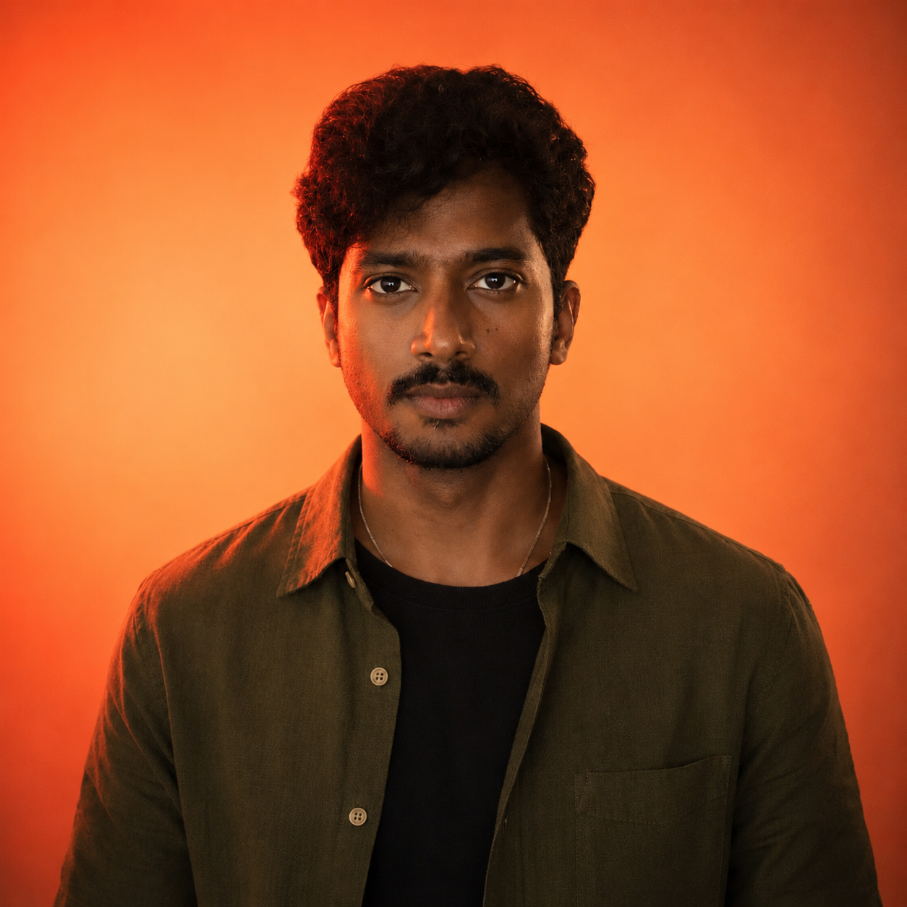

0→1
Unpaper Tax Management // Honeywell Concept
Bringing clarity to ambiguity
Defining the product before it exists. Building the first design system from scratch. Making complex workflows feel obvious from day one.
Enterprise software, design systems, and conversion design at scale. The complexity changed across telecom, IoT, fintech, and CRM. The craft didn't.

Two-track redesign of a 6-step Home Internet funnel inside a 20-year-old platform.
B2B IoT dashboard concept for property managers of a premium mixed-use community.
0→1 tax SaaS. Built the design system, scaled the function, grew the team.
Defining the product before it exists. Building the first design system from scratch. Making complex workflows feel obvious from day one.
Finding where users drop. Redesigning the friction. Governing design systems across distributed engineering teams.
Designing foundations that outlast the products they were made for. Standardizing cross-functional handoffs. Bringing AI into the practice without losing craft.
Enterprise and SaaS, across telecom, IoT, fintech, and automotive.


Telecom conversion, IoT concept design, fintech 0→1, automotive CRM modernization. Click into any card for the full story.
Two parallel tracks — strategic vision and iterative implementation — moved a six-step lower funnel processing 50–100K monthly users. Plus a Verizon Design System 2.0 → 3.0 migration shipped without regressing conversion.
Property-manager dashboard concept — designed via prototype-led interviews that doubled as the artifact our business lead carried into the enterprise pursuit. Five disconnected operator tools collapsed into one command layer.
First designer at the company. Built the Tax Firm Management product 0→1 — IA, system, brand, team. Six years later, Unpaper brought me back as a consultant to ship a new Billing App and revamp the original platform.
Sole designer modernizing Affinitiv's vertical CRM for automobile dealerships. Bridged US business (Chicago) and India engineering — early-career proof of senior-IC instincts: autonomy, documentation discipline, cross-continental ownership.
The thread across the work: making complex systems legible at scale. Enterprise software, design systems, fintech, IoT, and automotive SaaS.
I design at the intersection of clarity and craft — where complex systems become things people actually want to use.
Ten years across enterprise software, design systems, IoT command-centers, and Indian tax compliance — at Verizon, Honeywell, Unpaper, and Affinitiv. I work close to engineering, live in systems thinking, and treat craft as how users feel trust. Currently consulting at Unpaper while looking for the next senior or lead full-time role.
No design happens until the problem is understood deeply. Research, synthesis, framing — always first.
Every component is part of a larger system. Optimise for reusability, scalability, consistency.
Details aren't decoration — they're how users feel trust. Spacing, interaction, copy.
Best work happens when designers and engineers build together. Specs, tokens, in the build.
A senior or lead product design role at a product company where design has a seat at the product table — enterprise software, fintech / regtech, IoT or platform products, developer tools. Complex software where craft and clarity matter. Remote or hybrid; open to Indian and international employers.
Less interested in: ad-tech, growth-hacking-driven consumer products, anything that requires being loud.